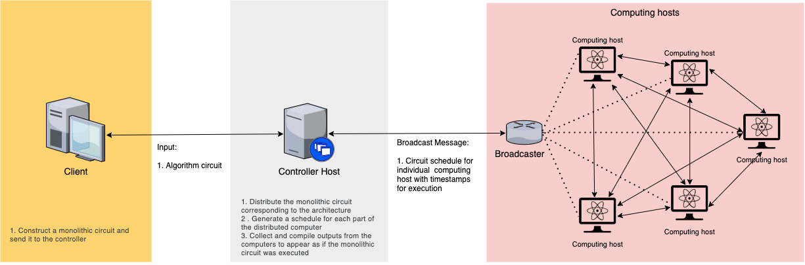

Introduction¶
Interlin-q is a distributed quantum-enabled simulator which imitates the master-slave centralised-control distributed quantum computing system with interconnect communication between the nodes. Using this simulator, one can input any monolithic circuit as well as a distributed quantum computing topology and see the execution of the distributed algorithm happening in real time. The simulator maps the monolithic circuit to a distributed quantum computing architecture and uses a master-slave relation with a centralized controller communicating to computing nodes in the network. Interlin-q can be used for designing and analysing novel distributed quantum algorithms for various distributed quantum computing architectures.
The method used to accomplish this is based on the following paper:
Distributed Quantum Computing and Network Control for Accelerated VQE
Stephen DiAdamo, Marco Ghibaudi, James Cruise (arXiv: 2101.02504)
Simulated Architecture¶
The simulated architecture of Interlin-q can be seen in the image below:
{kind=link}
The controller host gets the monolithic circuit as an input from the client, converts it to a distributed circuit and generates schedules from it for individual computing hosts and broadcasts it to them. The controller host and all the computing hosts share a global clock. When the computing hosts receive the broadcast, they extract their schedule from it and perform the operations in the schedules according to the global clock and the timestamps on the operations. The final results are sent over to the controller host from all the computing hosts for further processing.
Conversion of monolithic to distributed circuit¶
The monolithic circuit is a circuit which is designed to be implemented by a single quantum computer. To implement this same algorithm using multiple interlinked quantum computers, this monolithic circuit needs to be converted to a distributed circuit over a given topology of the interlinked quantum computers.
This distribution is performed by the controller host, by analysing the input monolithic circuit and searching for any control gates where the control and target qubits lie in separate computing host. If any such control gate is found, it is replaced by using a Cat-circuit shown in the image below. The controller host generates the distributed circuit by replacing all such control gates.
Distributed Scheduler and Broadcasting¶
The controller host forms a distributed schedule of operations according to timestamps for individual computing hosts using the distributed circuit. The operations are timestamped after considering the amount of time the operation would take to be performed on the specific computing hosts. These operations are then broadcasted to all the computing hosts.
Executing the distributed algorithm¶
The computing hosts receive the broadcasted schedules and extract their schedule from it. The controller hosts and all the computing hosts share a Clock object, which enable them to perform operations according to the schedule in synchronization. Once the operations are performed, and resulting error or successful measurements are reported back to the controller host, who further processes the output for the client.